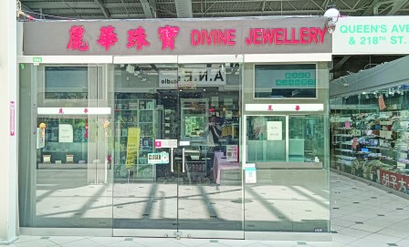
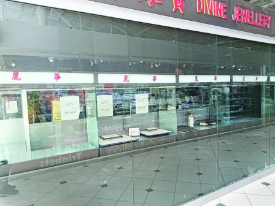

图为被劫匪突袭的丽华珠宝行，昨日仍大门紧锁，还没有恢复营业。（明报记者摄）


砸烂的玻璃都还没有重新装上。（明报记者摄）
万锦市太古广场内的丽华珠宝店(Divine Jewellery)周二(6日)下午第三次遭打劫。附近商户称，在商场行劫的匪徒都是来去如风，半分钟不到抢了就走，外面有人开车，所以都能抢在警察到来之前逃脱。
商场一位女店东称，3名劫匪都是十多二十岁的黑人青年。「这些人犯案，都是早就已经『踩过场』，而且听说外面还有人开车接应，所以能抢在警察到来之前逃走。」
丽华珠宝店附近一家华人商铺的老板昨（7日）称，当时他没看见劫匪的样貌，只知道是3人，并听到一些玻璃被打碎的声音。
「劫案发生的过程很短暂，只有十多二十秒左右，很快就结束。在太古发生的珠宝行抢劫案，单单都是这样快捷的。」
对于这样的珠宝行劫案，这位店东表示：「周围都有，已经算是司空见惯了。」
另外一位姓高的老板说，他也只是听见砸玻璃的声音，劫匪的相貌他也没看见。「他们就是冲进店里面，砸烂了玻璃后，抢走展示在走廊一侧橱窗内的贵重珠宝首饰。你看里面被砸烂的玻璃都还没有重新装上，现在就暂时用黑色塑料袋来遮盖著。
「还好劫匪就是冲著珠宝来的，不是冲著人来的，所以没有人受伤。反正有保险赔，犯不著抵抗，万一惹恼了劫匪，可能还会出现一些更严重的意外。」
高先生表示，他在太古开店2年半，知道发生在广场内的珠宝店抢劫案就有4宗。
他还表示现在「搵食艰难」，生意和刚开业时相比差很远。
「不知道什么原因，逛商场的人流没有减少，但购买力却下降了。」